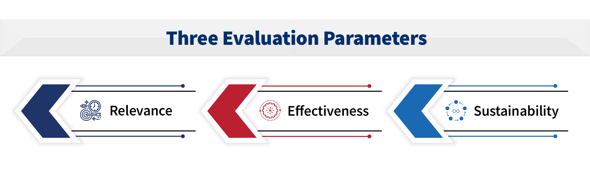

-
Summary
-
The United States Agency for International Development/Philippines (USAID/PH) commissioned a third-party performance evaluation to understand the extent to which the Science, Technology, Research and Innovation for Development (STRIDE) Activity has met its objective of strengthening science, technology, innovation, and partnership (STIP) in higher education institutions (HEIs) and contributed to the Country Development Cooperation Strategy (CDCS) objectives of “Broad-based and Inclusive Growth Accelerated and Sustained” and “Inclusive, Market-Driven Growth Expanded.” The evaluation provides evidence-based recommendations for USAID’s and the Philippine Government’s next-generation science, technology, research, and innovation initiatives. STRIDE’s three-year (2018–2021) extension period is the focus. During this extension period, STRIDE adopted a whole-of-community approach that leverages innovation to benefit local enterprises and is expected to spur region-based innovation through Regional Inclusive Innovation Centers (RIICs). STRIDE also promotes a whole-of-government approach to strengthening the innovation ecosystem (IE) through its support for national innovation policy. Both activities promote IE convergence.
The evaluation design is mixed methods with quantitative and qualitative strands and three levels of analysis. The quantitative strand involved an electronic Capacity to Innovate survey of 70 scholars and grantees and 22 participants in remote focus group discussions (FGD) and an inventory of activities found in STRIDE quarterly and annual report documents for each intermediate result (IR). The qualitative strand used the following data collection procedures: 1) document review and 2) nine (9) remote FGDs with a total of 63 participants, 30 remote key informant interviews (KIIs), and two (2) RIIC case studies with six (6) remote KIIs for a total of 199 respondents, of which 48 percent were women.
The three levels of analysis are 1) national-level innovation policy analysis; 2) regional-level collaborative framework focusing on the RIICs and other government-industry-academe linkages, including links to the Cities Development Initiatives (CDIs); and 3) individual-level granular analysis (from HEIs and government research and development institutions) of STRIDE interventions and how these have affected IE improvement. The evaluation used mind mapping to generate qualitative information and NVivo software for qualitative data processing. The evaluation team used descriptive statistics and graphic displays for quantitative data analysis and derived joint display tables. There were three evaluation parameters: relevance, effectiveness, and sustainability. Due to COVID-19-related restrictions, the evaluation was fully remote.
Findings revealed that HEI innovation capacity (IR1) improved more than the two other IRs, which is likely attributed to the earlier STRIDE investments in intellectual capital. The evaluation team attributes the improvement in science, technology, and innovation (STI) curricula to several capacity-building activities. These include the Professional Science Masters (PSM) curriculum workshop, Career Center training, Knowledge and Technology Transfer Office (KTTO) training, Filipinnovation Entrepreneurship Corps (FEC), and Skills in Technical and Advanced Research Training (START).
The regulatory environment (IR2) has an emerging innovation capacity. Although there has not yet been a procurement law reform, HEI's research and extension incentives framework is in the pilot stage. The passage of the Philippine Innovation Act (PIA), the new operational policies at the Department of Science and Technology (DOST), the structural reforms in the Department of Trade and Industry (DTI), and the formation of eight RIICs improved both the national and the regional governments’ capacity to innovate (IR3). The breaking of silos (promoting interdepartmental cooperation) at the national and regional levels also occurred. According to respondents, the convergence of national, regional, and interdepartmental government efforts concerning innovation is the most significant contribution of STRIDE.
The evaluation team finds that STRIDE activities are relevant and address the country’s development challenges. They also align with the USAID Higher Education Program Framework and USAID Policy on Education. RIICs and government-industry-academe (GIA) reaching out to industry and micro-, small-, and medium-sized enterprises (MSMEs) is a first step to creating a strong IE. The Philippines Development Plan envisions a strong IE as a prerequisite to increasing the long-term competitiveness of the Philippine economy and attracting high-value industries that provide workers with higher incomes.
Capacity-building with local HEI and business communities’ participation has built trust among actors. In terms of effectiveness, linkages and collaborations broke down silos between levels of government, government departments, industry, and academia. The improved partnership among these sectors supports improved policies for extension services by government, industry, and academe. STRIDE’s work and strategy were congruent with Filipino cultural values that drove the success of the RIICs’ contribution to change in the IE.
One of these values is kapwa (shared inner self). Among the levels of kapwa, IE actors reached pakikipaglagayang loob (acceptance). This led to increased trust among the different actors, supporting the success of the RIIC initiatives. STRIDE’s achievements will likely continue after the activity ends because most of the policies and programs it espoused are or are becoming institutionalized. Sustainability is also likely because STRIDE’s policy support and interventions align with the government's.
STRIDE’s contributions in achieving the three IRs are expanding the competencies of IE actors and providing space for interaction to practice newly acquired technical knowledge about innovation. The RIIC is an effective platform for convergence to map, align, and link all innovation actors in the region for inclusive economic growth and business recovery. Start-ups and spin-offs often operate at low levels of innovation, which could be due to mistrust between industry and academe. Empowering innovation actors was a powerful strategy for sustainability. Some of the STRIDE’s performance indicators, such as “strengthening collaboration,” are intangibles—hence, defining their metrics is essential.
The team offers the following recommendations based on the evaluation findings and conclusions:
- Establish regional START centers that could be based in STRIDE’s HEI partners.
- For HEI interventions, emphasize private universities and small public universities.
- For MSMEs to flourish, there is a need to support start-ups and spin-offs.
- A local training center similar to the START Center that addresses the needs of RIICs should be a priority.
- RIICs continue to need policy support to ease business relationships with industry and cultivate trust and confidence (e.g., encouraging disclosure) with innovators at universities.
- To sustain gains in the IE, operationalize the National Innovation Center and provide rules to access the Innovation Fund.
- Finally, create measurable indicators to monitor and evaluate the role of collaboration in improving the IE.
-
Research Questions
This independent, external evaluation addresses activities from the extension period only, although outputs from the first five years are necessary conditions for the extension-phase activities. The evaluation focuses on STRIDE’s performance in achieving its stated objectives in relation to its three IRs. The questions focus on STRIDE’s relevance, effectiveness, and sustainability, and incorporate learning questions from STRIDE’s Activity Monitoring, Evaluation, and Learning Plan (AMELP). The evaluation incorporated inputs from consultations with the USAID/PH Office of Education and the implementing partner (IP) into these questions and the subsequent evaluation design.
The following are the key questions per evaluation criterion. The evaluation team used 15 sub questions to gather information for answering key questions, which are discussed in the Findings section.
1
Relevance
(new context of the extension):In what ways has STRIDE contributed to addressing the development challenges as outlined in the Filipinnovation Roadmap of the Philippine Development Plan (PDP) 2017–2022, USAID Policy on Education, and USAID higher education program framework?
2

Effectiveness
(original context of STRIDE):In what ways did STRIDE contribute to achieving the three IRs on improved higher education institutions’ capacity for innovation, improved regulatory and policy environment for innovation, and improved government capacity for innovation?
3
Sustainability
(new context of the extension):What is the likelihood that initiatives and gains will continue after completion of the project?
Evaluation Design and Methodology
The evaluation design used mixed methods and included three levels of analysis: 1) national-level innovation policy analysis; 2) regional-level collaborative framework focused on the RIICs and other government-industry-academe (GIA) linkages; and 3) individual-level analysis from HEIs and research and development institutes (RDIs) regarding STRIDE interventions and their effects on IE improvement. Table 1 shows the data sources for performance indicators, Table 2 contains data collection methods and the number of respondents per unit of analysis, and Table 3 describes the data processing tools and methodology.
The evaluation team collected quantitative data for two groups through an online Capacity to Innovate survey. Set A was for HEI scholars and grantees. A total of 70 (55 percent) responded to the online survey out of a population of 126 scholars and grantees. Set B consisted of participants in the focus group discussions (FGDs) for both the RIICs and the GIAs. A total of 22 out of 63 people (35 percent) responded to this survey. STRIDE provided the evaluation team with a list of HEI scholars and grantees. Annex B provides a list of all FGD participants. Results of Set A are found in Annex C, while tabular data for Set B are in Annex D.
Qualitative data came from 30 key informant interviews (KIIs) and nine FGDs, engaging a total of 63 participants for the latter. The four sample regions were the National Capital Region (NCR) and Regions 4-A, 7, and 10. The case study regions for the RIIC case study were Regions 11 and 3. The evaluation team conducted six KIIs in the case study regions. The national-level KII respondents were undersecretaries of the DOST, the DTI, assistant secretary of the National Economic and Development Authority (NEDA), president of PASUC, director general of Intellectual Property Office of the Philippines (IPOPHL), president of SEIPI (a private firm), and executive director of the CHED. The regional KII respondents, including case study regions, were regional directors of DOST, DTI, and NEDA. KII respondents from HEIs were presidents, chancellors, or vice presidents for R&D and other similar positions from the sample universities. FGD participants were business leaders who participate in the RIICs and GIA, technical personnel from academe and regional government offices, and local government elected officials. Annex B provides a list of all FGD participants; they are currently the major in the IE. The percentage of women respondents ranged from 43 percent at the national level to 53 percent at the industry level.
The evaluation team processed and analyzed the qualitative data it collected using mind map and NVivo software and conducted content analysis. Five analysts coded all the information gathered from KIIs and FGDs. To ensure consistency in coding the KII and FGD information, the evaluation team followed these steps: use of codebook; two cycles of coding for each analyst; estimating interrater reliability using the NVivo 9 software collaboration cloud; and validating the codes that were used and themes the entire group generated. The interrater reliability ranged from .80 to 1.00, which indicates reliable coding of the information (Annex I).
The evaluation team analyzed quantitative data using descriptive statistics and graphics. Since this was a performance evaluation study, the team looked for evidence rather than statistical significance. This is consistent with USAID guidance for monitoring and evaluation in the program cycle2. The evaluation team also used joint displays that combined qualitative and quantitative information into the same graphics for a mixed-methods approach to the analysis.